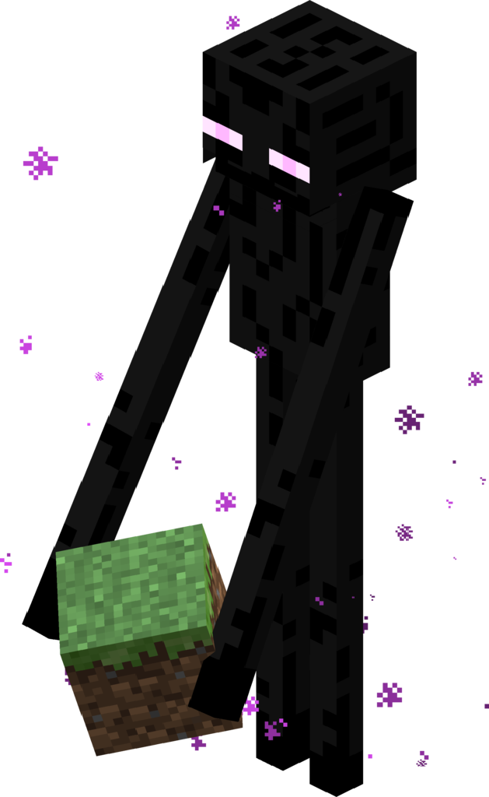
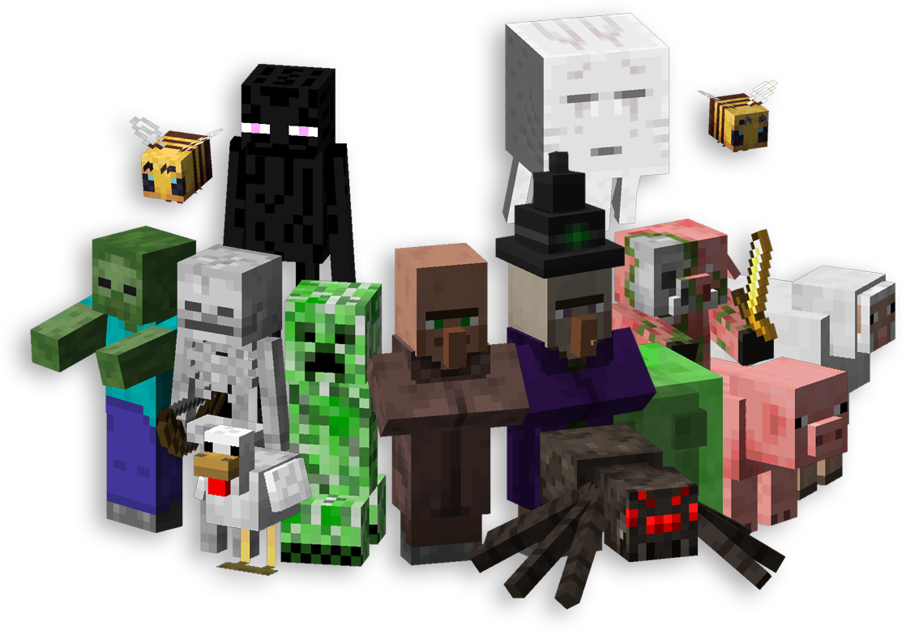

Mobs
Conoce a las criaturas que habitan el mundo de Minecraft.

Enderman
Una criatura misteriosa que puede teletransportarse y mover bloques.
Más sobre Endermen

Todos los mobs de Minecraft
Criaturas que habitan el mundo de Minecraft, cada una con habilidades y comportamientos únicos. Algunos son pacíficos, mientras que otros representan un verdadero desafío.
Más sobre Mobs